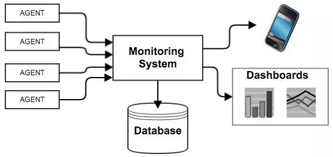
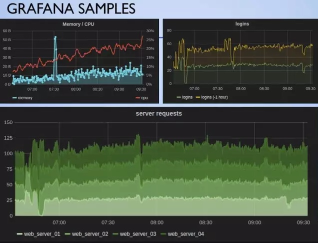
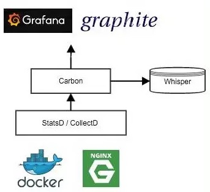
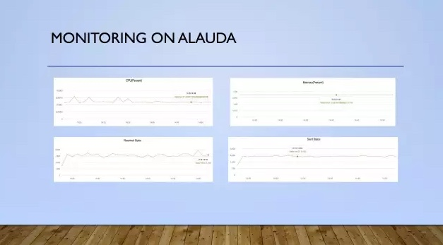

你的容器还好吗？常用的Docker监控技术
转自灵鹊云 blog ：http://www.alauda.cn/2016/03/23/docker-monitor/ 2016-04-19， By Saurabh Wagh
前言
在Docker容器技术飞速发展之时，监控容器的效率与健康也变成了至关重要的需求。在Docker资深提供的监控技术逐渐成熟时，来自第三方的监控工具也同时步入了人们的视线。
Saurabh来北京参观交流期间，在DBA交流群分享了《Docker容器的监控技术》，对监控工具进行了简要的分类和介绍，帮助大家在为服务设计监控方式的时候能够更有效的确定所需要使用的组件。同时，对目前国际上使用率较高的主流解决方案进行分析对比，帮助大家选择适合自己的监控方案。
作者简介：Saurabh Wagh，灵雀云首席架构师，负责容器服务相关的产品技术架构。Saurabh拥有卡耐基梅隆大学计算机科学硕士学位，曾在Nutanix与微软负责虚拟机与容器的核心技术研发，具有多年的企业与大型云计算架构经验。
首先，我们为什么需要监控我们的服务？其中有一些显而易见的原因，比如需要监控工具来提醒我服务出现了故障，比如通过监控服务的负载来决定扩容或缩容。此外，可能需要检测和分析一些特殊情况：比如服务受到攻击时，监控技术将发挥非常大的作用。对于大多数公司或组织而言，当在线事件发生时或事件发生后，还必须深入到问题根源，通过监测到的数据进一步研究其中的问题。
知道了为什么需要监控，下面我们来快速了解一下到底有哪些需要监控的典型资源。总的来说，目前有两种监控的类型，黑盒监控和白盒监控。
- 黑盒监控是指只观察服务的外部节点并查明它们是否像预期一样工作。
- 白盒监控是指在系统内部监控各个事件，以此来获得更深入的洞察，如性能瓶颈等。而我们所需要做的只是在各个节点上进行监控，通过一些应用的详细监控去验证该应用是否如预期一样正常运行。如果你拥有自己的基础设施，那么你也可以对CPU、磁盘、内存、网络等进行监控，了解你所关注的数据和信息。从Docker的角度来看，容器的资源利用率可能是你需要去关注的关键指标。 基于你的控制方式可以在不同的层面上实现监控功能。首先，监控目标（收集指标的来源）可以是应用程序本身，也可以是主机和承载应用的容器。另一方面，对数据进行可视化主要是为了查看收集到的每个实例的数据，也可以查看集群级别和区域级别的数据。
这样就引出了这次讨论的关键——应该选择哪种适合自己的监控工具？对于这个问题我们能够发现太多的选择，每一款工具都有自己的优点和缺点。所以在接下来的分享中，我会重点花时间来分析这些监控工具之间的区别，以及如何找到和你完美契合的那一款监控工具

总的来看，这些监控工具可以分为两类：一类是自主托管解决方案（Self hosted solutions），你可以用它来构建和托管全部stack；另一类是SaaS解决方案，你只需要把数据接入即可实现监控功能。下面让我们来比较一下这两类解决方案：
对于自主托管解决方案，基本上我们可以自己构建整个监控stack并且在自己的平台上托管。这样做的好处是，如果你选择了一套开源组件，那么设置的成本将大大降低。不过需要注意的是，这样一来你需要不断地设置和维护它们，这将大大增加你的工作量和工作复杂度，所以成本还是选择这一类方案的重要因素。一般而言，这是大型企业会去选择的理想方案，因为可以一次性投入资源和成本，而无须担心未来服务扩展所带来的成本问题。
下面我们来对比一下SaaS监控解决方案，这类方案非常简便并且能够让你快速实现监控功能。SaaS监控方案有非常丰富的集成度，包含了大多数常见的产品/服务stack，从而将设置难度降到最低，并且无需操心未来该如何根据自己的服务进行扩展。不过需要注意的是，一旦你选择了这类方案，成本将成为你必须考虑的问题，因为SaaS解决方案会随着服务的扩展而不断增加成本。此外，还有一点需要留意的是，你服务中的指标数据将会流向第三方，所以在选用之前需要评估是否能够接受其中的风险。
自主托管解决方案
下面我们来看一下典型的监控解决方案的组件： 
通常情况下，你会有一个中央监控系统充当监控数据的处理中心。同时你会有一些软件（可能只是API）在主机上（或容器中、或作为代码中API）运行。Agent将所有指标数据上传到监控系统，系统将在数据库中定期刷新，并基于这些数据进行处理以创建可视的dashboard视图或发出必要的警报。这两种常见功能的实现就需要依靠alert系统和dashboard系统。
以上这些都是构建自己监控系统时需要选择的组件。现在，让我们更深入的分析下每个组件我们有哪些合适的选择。
Agent
首先从agent开始，这是从机器中收集和汇总数据的模块，我来简单分析一下4个主流collector的特点：
Docker stats
* Native monitoring tool for Docker
* Real-time system resource usage of containers
* Used by other stacks for container level metrics collection.
CAdvisor
* Containerized Agent, easy setup
* Monitor Containers & Host
* Samples every one second
* Stores one minute worth of history
StatsD
* Event counter / aggregator
* Listens to UDP data from sources
* Flushes data at intervals
* Application code is instrumented to send data to the daemon.
CollectD
* System statistics collection daemon.
* Periodically polls sources for metrics
* Comes with 90 ready plugins for various system components.
* StatsD can be one source of data.
数据存储
首要的一个问题是数据到底有什么特别之处：时间数列数据有特殊的模式，也就是数据的收集是按照时间的固定维度来进行的。数据收集量会在短时间内变得非常庞大，因此要想查看这些数据就需要特定功能，比如聚合和汇总等。此外与其他类型的数据有所不同，保留策略在监控数据过程中会非常常见。
其中最常见的监控数据库的方式是使用 InfluxDB。它是专门为时间序列数据设计的，能够储存值和元数据。至于扩展则非常简单、直接——横向扩展并且隐藏数据库分片的复杂度。它有一个SQL的查询语言，你可以设置每个数据库的保留策略。同时，它开放了REST API，从而可以集成众多常用的collector，并且集成了CLI来支持数据的查询。
可视化
可视化是监控解决方案中最重要的组成部分，因为我们要通过它从数据中展示所有的信息。任何可视化工具需要提供建立动态监测dashboard的功能，并且支持汇总和深入诊断等功能。一个好的可视化工具必须要通过简单的语言就可以生成这些监控图表。
Grafana是最流行的可视化工具，它提供了非常简单的UI和图形语言的支持来生产动态监控图表。它有一些很酷的功能，包括可以在同一张图中展示不同时间框架下的时间序列数据，或者在图表中标注其他事件的数据。这些功能可能在很多时候非常有用，因为看似无关的事件很可能对某些指标造成异常的影响。 此外，Grafana可以很便捷地通过链接分享动态图形。Grafana支持Graphite, Elasticsearch, Prometheus, InfluxDB, OpenTSDB 和其它后端工具。

在这里我想推荐一种最常用组合方式：CAdvisor和StatsD用于数据收集，InfluxDB用于数据存储，Grafana用于可视化，可以帮助你更好的监控Docker化的应用。
在自主托管解决方案中有一种解决方案是把全部stack提前封装好，这样你就不需要去挑选相应的组件了，Prometheus就是其中一种：
Prometheus Server由一个中央监控系统组成，可以根据不同的监控目标配置相应的location，并且在相应的节点显示出这些指标。至于数据的收集，Prometheus有一些自定义的方式，比如从Docker容器获取数据等等。你可以在metric endpoint上获取应用的详细数据，以纯文本的形式进行输出，之后Prometheus会擦除这些数据，并把它们按配置规则进行处理，然后汇总这些数据并将其转储到Prometheus数据库中。与InfluxDB相比，这个数据库更快而且更小，但并不允许数据的复杂查询。至于可视化方面，Prometheus提供自己的dashboard并且支持集成Grafana工具。
另一种常见的方法是使用Graphite。它的stack采用CollectD/ StatsD进行数据采集，采用Carbon–layer收集和缓存数据，并最终基于保留策略将数据转储到Whisper Database。在可视化方面，它有自己的Django Web APP，同样可以支持Grafana。

SaaS解决方案
接下来我们来说说SaaS解决方案。就像我之前说的，SaaS方案设置非常简单同时具有丰富的功能，可以让你在短时间内立刻实现对服务的监控，问题是可能带来昂贵的成本。
最流行的SaaS解决方案是Datadog。这是一个可以注册的云端监控解决方案。只要你有一个账户，就可以安装agent或使用API把数据传输到后端。针对Docker，可以选择在有权限的主机上安装Docker化的agent，这样就很方便地从其他容器上收集性能数据了。Datadog最让人感兴趣的地方是它丰富的集成度，它集成了大部分的组件，包括software stack、基础服务提供商和build server中的各种组件。这能够帮助你在单一图形上生成多个不同来源的数据，使调试过程更加简单。Datadog有一个很酷的特点是交互式的dashboard，你可以就一个监控图进行讨论，并且保存下来以便日后参考。此外，Datadog还具有非常好的阈值警报和异常检测逻辑。
另一个很有意思的工具是Sysdig。就其本身而言，Sysdig是一个可供主机安装的免费开源工具，它配备了一个集成了所有系统级事件的内核模块，通过Docker化的agent收集和处理这些事件。同时，它还提供了一个叫做CSysDig的控制台工具，可以用来查看通过SysDig收集到的监控指标。你可以注册Sysdig cloud，然后从运行在主机里的Sysdig实例收集相应的监测指标，并且生成系统指标的综合视图。Sysdig的核心价值在于监控节点和运用工具进行系统级调试的能力。因此，如果你的主要目的是收集主机的监控指标，Sysdig将会是一个很不错的选择。
灵雀云解决方案
灵雀云提供了基本的容器监控和日志收集功能，可以监控CPU，内存和网络的状态：

Copyright © 2015 Powered by MWeb, Theme used GitHub CSS.